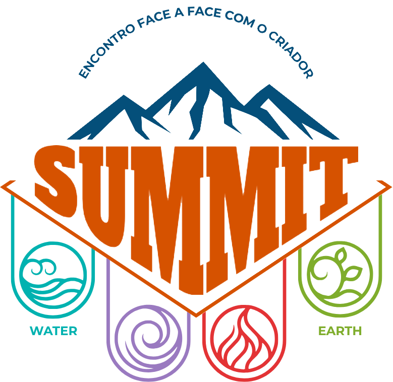

É um movimento que nasce com o propósito de transformar vidas. Criado especialmente para quem deseja viver algo diferente, mais profundo e verdadeiro com Deus.
Um lugar de experiências marcantes, amizades sinceras, momentos de reflexão, crescimento pessoal e decisões que podem mudar o rumo da sua vida. No SUMMIT, você não apenas participa... você vive.
Público-Alvo: Jovens de 16 a 30 anos.
Jovens de igrejas locais, interessados e diretores/líderes do Ministério Jovem.
O que buscamos alcançar durante nossos dias juntos.
Proporcionar uma conexão mais profunda com Deus através de momentos de reflexão, oração e adoração.
Incentivar a construção de amizades verdadeiras e um forte senso de comunidade entre os participantes.
Levar cada participante a entender seu papel e chamado, além de prepará-los para serem líderes.
As inscrições serão realizadas exclusivamente pelo Sistema Eventos da Igreja de forma individual via CPF.
27 de abril a 04 de maio
13 a 20 de maio
Formas de pagamento: PIX à vista ou Cartão de Crédito em até 2x.
*A entrada no evento só será liberada com o QR Code oficial após confirmação de pagamento no sistema oficial que será divulgado em breve.
Dividido em Ala 1 (Homens) e Ala 2 (Mulheres) em dormitórios coletivos com banheiros completos.
Atenção: Leve sua própria rede ou colchão (conforme escolhido na inscrição) e itens de cama pessoal.
Todas as refeições inclusas. O cardápio seguirá o padrão semi-vegetariano, podendo haver opções com frango/peixe pontualmente.
Pedimos que os princípios da modéstia cristã sejam seguidos em todos os momentos, inclusive recreativos. Evite roupas excessivamente justas, curtas ou transparentes.
Teremos equipe de saúde de plantão. Lembre-se de levar
medicamentos de uso contínuo.
Comporte-se com espírito
cristão: cuide do espaço, respeite os horários e evite uso
excessivo de celulares.
Acesse o nosso GOG (Guia de Orientações Gerais) para ler todas as regras, orientações de conduta, horários e detalhes completos sobre a infraestrutura do evento.